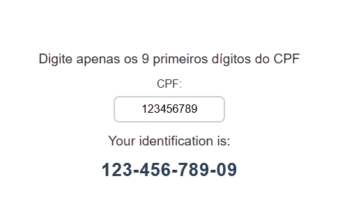
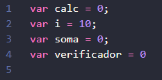
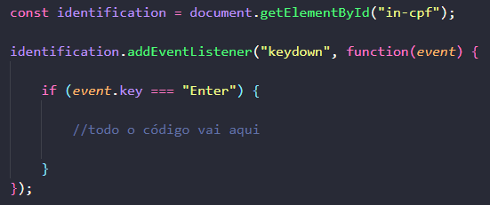
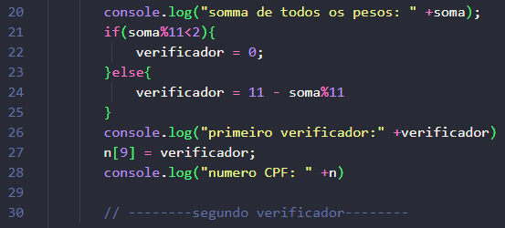
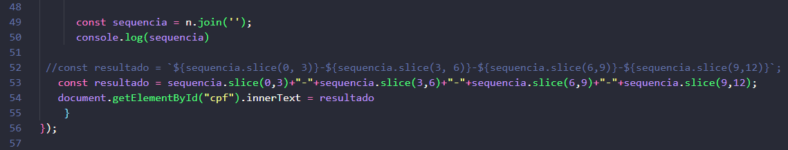

Cálculo de CPF

🎯 Objetivo do Projeto
- Desenvolver o algoritmo para calcular os dois dígitos verificadores de um CPF.
- Esse processo garante que o CPF seja válido e único para cada pessoa.
- Digite os 9 primeiros dígitos do CPF (somente números): 123456789
- O programa vai calcular os dígitos finais:
- Os dois dígitos finais do CPF são: 09
- CPF completo: 12345678909
📃 Entendendo o cálculo
O CPF (Cadastro de Pessoas Físicas) é um documento de identificação único para cada
cidadão brasileiro. Ele é composto por 11 dígitos, sendo os dois últimos dígitos
verificadores, que são calculados a partir dos nove primeiros dígitos.
Vamos utilizar o CPF 123.456.789 como exemplo para explicar como os dígitos
verificadores são calculados.
Passo a Passo para Cálculo dos Dígitos Verificadores
1. Estrutura do CPF
O CPF é composto por 11 dígitos, no formato: XXX.XXX.XXX-YY, onde:
XXX.XXX.XXX são os 9 primeiros dígitos (neste caso, 123.456.789).
YY são os dois dígitos verificadores que vamos calcular.
2. Cálculo do Primeiro Dígito Verificador (10º dígito)
Para calcular o primeiro dígito verificador, seguimos os seguintes passos:
Multiplicar cada um dos 9 primeiros dígitos por um peso que começa em 10 e diminui
até 2:
1º dígito: 1 × 10 = 10
2º dígito: 2 × 9 = 18
3º dígito: 3 × 8 = 24
4º dígito: 4 × 7 = 28
5º dígito: 5 × 6 = 30
6º dígito: 6 × 5 = 30
7º dígito: 7 × 4 = 28
8º dígito: 8 × 3 = 24
9º dígito: 9 × 2 = 18
Somar todos os resultados das multiplicações:
10 + 18 + 24 + 28 + 30 + 30 + 28 + 24 + 18 = 210
Calcular o resto da divisão da soma por 11:
210 ÷ 11 = 19 com resto 1
Determinar o primeiro dígito verificador:
Se o resto for menor que 2, o dígito verificador é 0.
Caso contrário, o dígito verificador é 11 - resto.
Neste caso, 11 - 1 = 10. Como o dígito verificador deve ser um único número,
consideramos 0.
Primeiro dígito verificador: 0
3. Cálculo do Segundo Dígito Verificador (11º dígito)
Agora, para calcular o segundo dígito verificador, utilizamos os 9 primeiros
dígitos mais o primeiro dígito verificador (que acabamos de calcular).
O processo é semelhante, mas os pesos começam em 11 e diminuem até 2.
Multiplicar cada um dos 10 dígitos (9 primeiros + 1º verificador)
por um peso que começa em 11 e diminui até 2:
1º dígito: 1 × 11 = 11
2º dígito: 2 × 10 = 20
3º dígito: 3 × 9 = 27
4º dígito: 4 × 8 = 32
5º dígito: 5 × 7 = 35
6º dígito: 6 × 6 = 36
7º dígito: 7 × 5 = 35
8º dígito: 8 × 4 = 32
9º dígito: 9 × 3 = 27
1º verificador: 0 × 2 = 0
Somar todos os resultados das multiplicações:
11 + 20 + 27 + 32 + 35 + 36 + 35 + 32 + 27 + 0 = 255
Calcular o resto da divisão da soma por 11:
255 ÷ 11 = 23 com resto 2
Determinar o segundo dígito verificador:
Se o resto for menor que 2, o dígito verificador é 0.
Caso contrário, o dígito verificador é 11 - resto.
Neste caso, 11 - 2 = 9.
Segundo dígito verificador: 9
4. CPF Completo
Com os dois dígitos verificadores calculados, o CPF completo fica:
123.456.789-09
Resumo:
Os 9 primeiros dígitos: 123.456.789
Primeiro dígito verificador: 0
Segundo dígito verificador: 9
CPF completo: 123.456.789-09
🌎 1. Variáveis globais

👉 Algumas variáveis globais que serão usadas em todo o projeto.
🎮 2. Função e Botão Enter

👉 A variável identification é declarada com const e recebe o elemento HTML de um campo de entrada/input com o ID.
👉 O método .addEventListener() é chamado na variável identification para anexar um manipulador de eventos. O evento escutado é 'keydown' (disparado quando uma tecla é pressionada).
👉 No if, verificamos se a tecla que foi pressionada via event.key é a tecla Enter. Isso garante que o código dentro do bloco só será executado quando o usuário terminar de digitar e pressionar Enter.
👉 Todo o código a partir de agora será feito dentro do if, pois só executa se Enter for clicado.
🧮 3. Começo do cálculo
👉 A variável n recebe o número digitado no input e usa o split() para separar esse número todo, um por um. Usar o split somente com aspas significa que ele irá separar por vírgulas. Exemplo: 123456789 se torna 1,2,3,4,5,6,7,8,9.
👉 O for serve para percorrermos todos os números, ou seja, 9 números. Por isso, o for começa em 0 e vai até ser igual a 8.
👉 A variável calc, em cada iteração do laço, vai receber o número que está em n no índice j. Isso significa que o primeiro número do nosso 123456789 é 1, pois o separamos com o split. j é o índice que começa em 0, então sabemos que o número 1 se encontra na posição 0, o 2 na posição 1 e assim por diante.
👉 n[j] deve ser multiplicado pelo peso do cálculo. Declaramos a variável i sendo 10, pois começamos o cálculo multiplicando por 10. Agora temos: 1 × 10.
👉 Na linha 17, a nossa variável soma recebe seu próprio valor e soma com calc. soma += calc. A variável soma, que era 0, adicionou 10; então, soma agora é 10.
👉 Por último, precisamos diminuir 1 de i, por isso o i--; agora, i é 9.
👉 O for fará isso com todos os 9 dígitos, sempre acrescentando à soma o novo valor de calc.
🧮 4. Continuação do cálculo

👉 Na linha 21, verificamos se o resto da divisão do nosso número por 11 é menor que 2. Basicamente, a soma total de tudo será dividida por 11. Se o que sobrar for menor que 2, então nosso verificador será 0.
👉 Senão, temos que pegar o número 11 e diminuir pelo que restou da divisão.
👉 Na linha 27, estamos colocando o nosso verificador na posição de índice 9, pois sabemos que nosso índice foi de 0 a 8, tendo, portanto, um número com 10 dígitos.
⛪ 5. Segundo verificador
👉 Acabamos o cálculo do primeiro verificador; agora você deve fazer o segundo verificador sozinho. Lembre-se de mudar o valor de i e de j.
🧮 6. Juntando e organizando

👉 Após você ter calculado o segundo verificador e tê-lo inserido no índice 10, obtendo o número correto com 11 dígitos, devemos juntar esse número novamente. Para isso, usaremos o join vazio com aspas: join('') serve para remover as vírgulas.
👉 Tínhamos 1,2,3,4,5,6,7,8,9,0,9 e agora teremos 12345678909.
👉 As linhas 53 e 54 são semelhantes. A linha 53 usa o que chamamos de Template String, uma forma mais prática de juntar texto com valores.
👉 Precisamos formatar esse número, e é por isso que usaremos agora o slice. Ele serve para pegar partes específicas da string, permitindo inserir algo em posições específicas.
👉 slice(0,3) + "-" significa que estamos começando do índice 0 e indo até o terceiro (ou seja, a quarta casa), e nela colocaremos o símbolo "-".
👉 Depois, faremos o mesmo começando do índice 3 até o 6, e assim por diante.
👉 Por último, estamos passando nosso número formatado para ser mostrado no HTML.